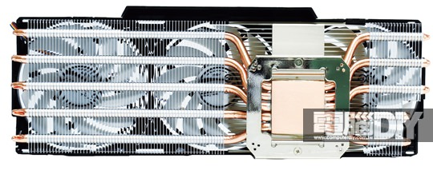
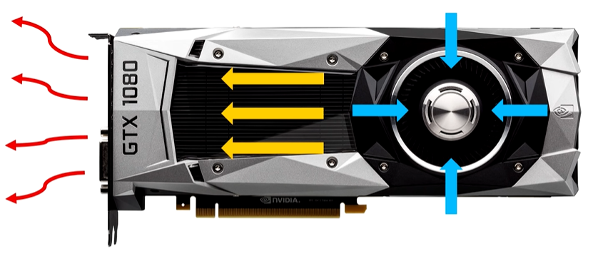
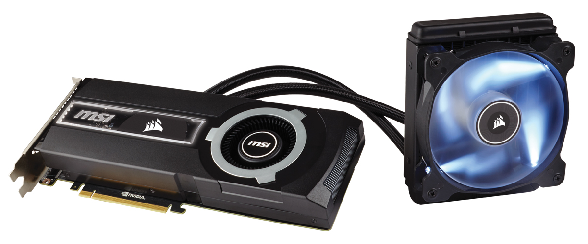
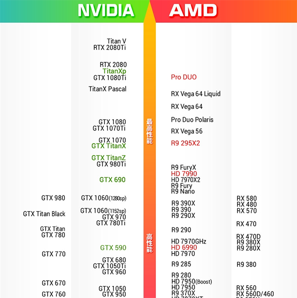

顯示卡 Graphic Card
顯示卡是個人電腦最基本組成部分之一，用途是將電腦系統所需要的顯示資訊進行轉換驅動顯示器，並向顯示器提供逐行或隔行掃描訊號，控制顯示器的正確顯示，是連接顯示器和個人電腦主機板的重要元件，是「人機對話」的重要裝置之一。
顯示卡分為內顯和獨顯，若只需要文書處理，可不用額外購買顯示卡，並使用Intel中央處理器內建的顯卡 (AMD中央處理器並沒有內建顯示晶片，需額外購買 )，但若有電競或影音編輯的需求，可額外購買並加裝在PCIE插槽上
晶片商 v.s 品牌廠
首先晶片商會設計顯示卡晶片並交給代工廠生產晶片，再轉至品牌廠設計自家的PCB板和散熱器，最後生產出我們看到的顯示卡產品。

外觀長度設計
短板: 比一般還短的顯卡，通常大約長17cm，適用於較小的機殼內，由於PCB板較短，零件較密集，將會有散熱能力不佳的問題，也無法加裝大型風扇，若無特殊需求，不建議購買
半高: 比短板還更窄的顯卡，通常大約也長17cm，適用於更小的機殼內，常設計於中低階顯卡上，由於PCB板較短，零件更加密集，將會有散熱能力嚴重不佳的問題，同時也只能加裝小型風扇，若無特殊需求，不建議購買
散熱模式
風扇直吹: 最常見的是熱方式，其將使用善熱鰭片接觸晶片在使用風扇吹風來帶走熱能，和塔散原理相似，也是最便宜的一種散熱模式
渦輪散熱: 最常見於NVIDIA公版卡上，期先由顯可上的渦輪扇吸風進去，通過導流罩裡的扇熱鰭片，最後在後擋板排出熱空氣，因有自己專屬的風道，廢熱將不會影響其他電腦零件
水冷: 通常只見於高階顯示卡上，其先將水由管線留至晶片，吸取熱能後並使用風扇吹風來帶走熱能，此為最有效的散熱方式，但同時價格也相對最昂貴
顯示卡型號
顯示卡的型號由一串英文字母，三到四個數字以及由時加上ti，首先的英文字母分別是GT、GTS、GTX和RTX，其代表著他的科技世代以及效能，當然RTX為最新一代的顯示卡，性能最好，但價格也相對最高，因此可考慮使用GTX，之後將分為三到四個數字，前兩者為世代而後兩者為型號，簡單來講數字越高越好，但也越貴，最後有時會加上ti字樣，其表示加槍版，但同時也會越耗電
安裝顯示卡